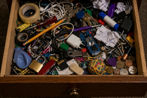

The Drawer of Random Things

| Type | Storage anomaly |
| Participants | 1 drawer, unlimited objects, 1 searching human |
| Outcome | Everything is found except the needed item |
| Main feature | Presence of all possible unrelated objects |
| Reliability | Absolute |
The Drawer of Random Things is a common domestic structure in which a wide variety of unrelated objects accumulate over time. Despite containing numerous items, the drawer consistently fails to contain the specific object being searched for.
The contents typically include cables, batteries, keys of unknown origin, small tools, paper fragments, and items whose purpose is no longer identifiable.
Mechanism
The formation of the drawer begins with temporary placement of small objects. Over time, these items are not removed, leading to gradual accumulation.
The phenomenon is closely related to the Law of Sudden Object Disappearance, as well as the Phenomenon of Closet Overfilling, suggesting that lost objects may relocate into the drawer.
- items enter the drawer but rarely leave;
- object identity becomes unclear over time;
- usefulness decreases while quantity increases;
- search efficiency approaches zero.
Stages
- Empty stage. The drawer is unused.
- Temporary storage stage. First objects are placed “just for now”.
- Accumulation stage. More items are added.
- Chaos stage. Organization disappears.
- Search stage. The user attempts to find something specific.
- Failure stage. The item is not found.
Effects
- discovery of unexpected objects;
- inability to locate needed items;
- increase in clutter;
- temporary distraction from the original goal.
In extreme cases, the drawer may contain objects that the user does not remember placing there.
Scientific debates
Some theories propose that the drawer acts as a passive collection system, while others suggest it actively attracts misplaced objects.
A controversial hypothesis claims that the drawer is connected to a wider network of lost-item storage systems.
Classification
- Minor case. Few unrelated items.
- Moderate case. Noticeable clutter.
- Severe case. Dense accumulation.
- Critical case. Drawer cannot be closed properly.
The most extreme subtype is the infinite drawer, where removing items does not visibly reduce its contents.